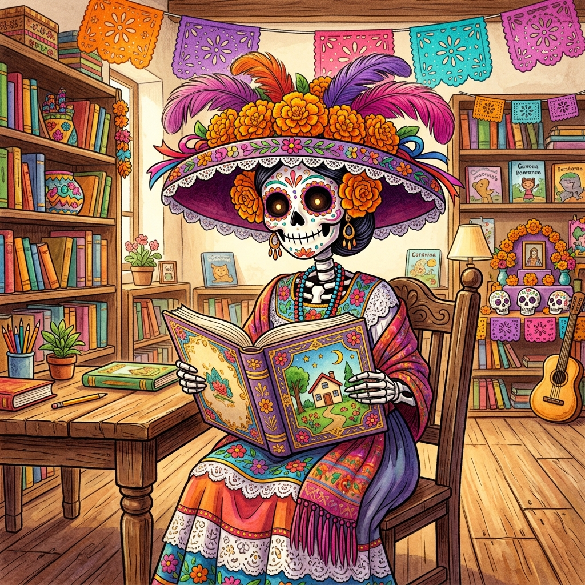
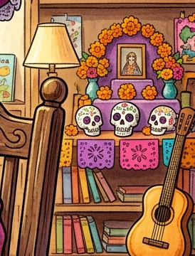

📚 Biblioteca Escolar
Rimas y Calaveritas
Rimas tradicionales y estrofas de cuatro versos para el Día de Muertos

🎯 PDA de Lenguajes (3° Primaria):
Reconoce y produce rimas, juegos de palabras y estrofas tradicionales de cuatro versos para completar calaveritas literarias sobre los libros y el cuidado de nuestra biblioteca escolar.
👆 Elige o arrastra la palabra que rima en consonante para completar el verso 4:
🎉 ¡Felicidades, Gran Poeta de la Biblioteca! 🎉
Has completado con éxito todas las estrofas tradicionales de cuatro versos. ¡La Catrina Lectora y Don Fermín están maravillados con tu talento poético!
🌟 La Ofrenda de Nuestra Biblioteca está Completa 🌟

📖🌼🕯️🥐💀👑
Ofrendaste sabiduría, respeto, ritmo y rimas tradicionales.
🧠 Lo que aprendiste hoy sobre la Rima Consonante:
- En las calaveritas literarias de 4 versos (cuartetas), las rimas crean la música y el juego de palabras.
- En la rima consonante, coinciden exactamente las vocales y las consonantes a partir de la última vocal acentuada (ejemplo: historieta con marioneta, o aventura con sepultura).
- Si solo coinciden las vocales (como grande con estante), es una rima asonante.
✍️ Taller del Poeta: ¡Produce tu Calaverita de 4 Versos!
Proyecto: Nuestra Biblioteca Escolar
1️⃣ Elige a quién dedicas la calaverita en la biblioteca:
2️⃣ Elige la terminación con Rima Consonante:
3️⃣ Tu nombre o grupo escolar:
📖 Guía Didáctica: Rimas y Estrofas Tradicionales
1. ¿Qué es una estrofa tradicional de cuatro versos?
Una calaverita literaria tradicional se escribe en estrofas de cuatro renglones llamados versos (cuarteta o redondilla). Cada verso tiene ritmo y relata con humor cómo la Catrina o la calaca visita a maestros, alumnos y libros en nuestra biblioteca escolar.
2. ¿Cómo reconocer la Rima Consonante en 3° Grado?
Ocurre cuando, a partir de la última vocal acentuada de las palabras finales, coinciden exactamente todas las letras (tanto las vocales como las consonantes).
⭐ biblio-teca rima en consonante con muñeca (-eca).
⭐ lec-tura rima en consonante con aven-tura (-ura).
⭐ es-tante rima en consonante con gi-gante (-ante).
⭐ lec-tura rima en consonante con aven-tura (-ura).
⭐ es-tante rima en consonante con gi-gante (-ante).
3. Diferencia entre Rima Consonante y Asonante
Si únicamente se repiten las vocales y las consonantes son diferentes (por ejemplo: estante y grande, donde solo suena a-e), la rima es asonante. ¡En este juego aprendemos a buscar la rima consonante exacta!